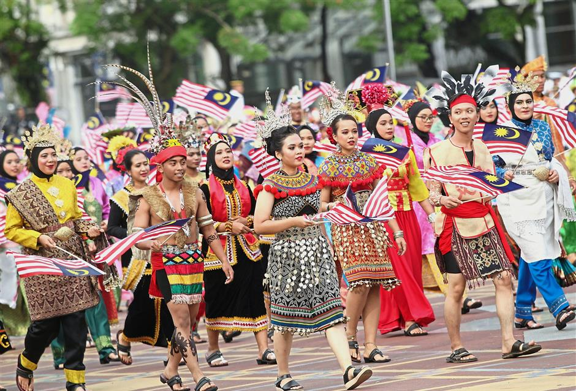

Holidays make up a special celebration of an event, culture or tradition. With Malaysia being so insanely diverse, how many holidays can we fit into just two months? As it turns out, probably more than most countries celebrate in an entire year. Looking at that alone made me wonder what culture actually means, and whether it is something we inherit or something we continue to shape every day.
Before talking about globalization, I think it is important to first understand culture. Most people, including myself, usually think of culture as food, clothing, language, or celebrations. While those are definitely part of it, this chapter challenged me to think about culture differently. Pieterse explains that culture is not something that stays frozen in time. Instead, it is constantly changing because people are always learning from one another. Whether it is through family traditions, migration, trade, education, or even social media today, culture continues to evolve as people interact with the world around them.
As I was reading this chapter, Malaysia was honestly the first country that came to mind. Growing up in Malaysia, I never really questioned why celebrating Hari Raya, Chinese New Year, Deepavali, Christmas, and many other holidays all felt so normal. It was just part of everyday life. Looking back now, I realize those experiences perfectly reflect what Pieterse describes. Malaysian culture is not made up of one single identity. It is built from many different communities that have influenced each other for centuries, creating something unique that still continues to change today. (Pieterse, Chapter 1)
Disentangling the Threads of Culture
One section that really stood out to me was "Disentangling the Threads of Culture." Instead of treating culture as one simple idea, Pieterse breaks it into different layers. The first layer is something every human shares, which is our ability to learn, communicate, and create meaning. The second layer is our local culture, the traditions and customs we learn from our families and communities. Finally, there is translocal culture, where we learn from people and places beyond our own borders through travel, migration, technology, and globalization.

I think Malaysia is probably one of the best examples of these layers working together. We grow up learning local traditions from our own communities, but at the same time we are surrounded by influences from all over the world. We still get influenced by the hottest new trends from the Japan or Korea, we love overseas dramas because Malaysia dramas are just too melodramatic, and we choose to take vacations away from home because we deeply love other cultures too. All this doesn't mean we don't love our culture, but rather it's a push and pull of exchanging culture everywhere, not just Malaysia for Malaysians.
"Learning is not necessarily localized in that we also learn from travel, pilgrimage, migration, media, movies, Internet, transnational sources, and so forth." Jan Nederveen Pieterse, Globalization and Culture: Global Mélange, Chapter 1.
This quote probably summarizes the chapter the best. Before reading it, I tended to think culture mostly came from where we were born. Now I see that culture also comes from the experiences we have outside of our own communities. For Malaysia especially, this makes a lot of sense. Our country has always been connected to other parts of the world through trade, migration, and cultural exchange. Globalization did not suddenly introduce these interactions. It simply made them happen faster and on a much larger scale. It funny to think that I though speaking multiple different languages was the norm, only to find out we are just weird people to mix 3 different languages all into one.
Takeway
My biggest takeaway from understanding culture at a deeper level is the idea of how culture is a beautiful mix of push and pull, and it can only happen if we the people allow it to be pushed and pulled. It's definitely easier for the newer generation as social media exposes us to literally every culture a single click or swipe a short video. I'm grateful to have the chance to experience diversity at a young age.